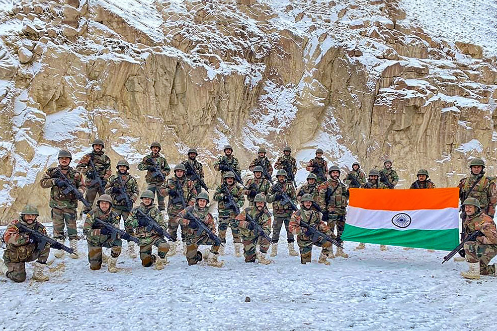

SOLDER
Sleep peacefully at your homes. Indian Army is guarding the frontier.

Indian Army's New year celebration at Galwan
Here's a time-line of our solder save us:
- 1947 -Tensions between India and Pakistan erupted into the first of three full-scale wars between the two nations over the then princely state of Kashmir. The Maharaja of Kashmir wanted to have a standstill position. Since Kashmir was a Muslim majority state, Pakistan wanted to make Kashmir a Pakistani territory. As a result, Pakistan invaded Kashmir on 22 October 1947, causing Maharaja Hari Singh to look to India, specifically to Lord Mountbatten of Burma, the governor-general, for help. He signed the Instrument of Accession to India on 26 October 1947. Indian troops were airlifted to Srinagar from dawn on 27 October. This contingent included General Thimayya who distinguished himself in the operation and in the years that followed became a Chief of the Indian Army. An intense war was waged across the state and former comrades found themselves fighting each other. Pakistan suffered significant losses. Its forces were stopped on the line formed which is now called the Line of Control (LOC).
- 1950 to 1953 -During the Korean War, although deciding against sending combat forces, India sent its 60th Parachute Field Ambulance unit to aid the UN troops fighting against the North Korean invasion of South Korea, as part of the 1st Commonwealth Division. In the aftermath of the war, an Indian infantry brigade formed the Custodian Force of India, some of whose soldiers were also part of the Neutral Nations Repatriation Commission, which assisted in the exchange of prisoners of war and was headed by Lieutenant General.
- 1962 -The cause of this war was a dispute over the sovereignty of the widely separated Aksai Chin and Arunachal Pradesh border regions. Aksai Chin, claimed by India as part of Kashmir, and by China as part of Xinjiang, contains an important road link that connects the Chinese regions of Tibet and Xinjiang. China's construction of this road was one of the triggers of the conflict. Small-scale clashes between Indian and Chinese forces broke out as India insisted on the disputed McMahon Line being regarded as the international border between the two countries. Chinese troops claimed not to have retaliated to the cross-border firing by Indian troops, despite sustaining losses. China's suspicion of India's involvement in Tibet created more rifts between the two countries. In 1962, the Indian Army was ordered to move to the Thag La ridge, located near the border between Bhutan and Arunachal Pradesh and about 5 kilometres (3 miles) north of the disputed McMahon Line.
- 1965 -- A second confrontation with Pakistan took place in 1965. Although the war is described as inconclusive, India had the better of the war and was the clear winner in tactical and strategic terms.Pakistani president Ayub Khan launched Operation Gibraltar in August 1965, during which Pakistani paramilitary troops infiltrated into Indian-administered Kashmir and attempted to ignite anti-India agitation in Jammu and Kashmir. Pakistani leaders believed that India, which was still recovering from the Sino-Indian War, would be unable to deal with a military thrust and a Kashmiri rebellion. India reacted swiftly and launched a counter-offensive against Pakistan. In reply, on 1 September Pakistan launched Operation Grand Slam, invading India's Chamb-Jaurian sector. In retaliation, the Indian Army launched a major offensive all along its border with Pakistan, with Lahore as its prime target.
- 1971 -An independence movement broke out in East Pakistan which was crushed by Pakistani forces. Due to large-scale atrocities committed against them, thousands of Bengalis took refuge in neighbouring India causing a major refugee crisis there. In early 1971, India declared its full support for the Bengali freedom fighters, known as Mukti Bahini, and Indian agents were extensively involved in covert operations to aid them the Indian Army moved 14 Punjab Battalion, of the 45th Cavalry regiment, into Garibpur, a strategically important town in East Pakistan, near India's border, and successfully captured it. The following day, more clashes took place between Indian and Pakistani forces. Wary of India's growing involvement in the Bengali rebellion, the Pakistan Air Force (PAF) launched a preemptive strike on 10 Indian air bases—at Srinagar, Jammu, Pathankot, Amritsar, Agra, Adampur, Jodhpur, Jaisalmer, Uttarlai, and Sirsa—at 17:45 hours on 3 December. However, this aerial offensive failed to accomplish its objectives and gave India an excuse to declare a full-scale war against Pakistan the same day.
- 1984 The Siachen Glacier, although a part of the Kashmir region, was not demarcated on maps prepared and exchanged between the two sides in 1947. In consequence, before the 1980s neither India nor Pakistan maintained a permanent military presence in the region. However, beginning in the 1950s, Pakistan began sending mountaineering expeditions to the glacier. By the early 1980s, the Government of Pakistan was granting special expedition permits to mountaineers and United States Army maps showed Siachen as a part of Pakistan. This practice gave rise to the term oropolitics. India, possibly irked by these developments, launched Operation Meghdoot in April 1984. An entire battalion of the Kumaon Regiment was airlifted to the glacier. Pakistani forces responded quickly, and clashes between the two followed. -.
- 1999 - In 1998, India carried out nuclear tests; and a few days later, Pakistan responded with nuclear tests of its own, giving both countries nuclear deterrence capability, although India had tested a hydrogen bomb, which Pakistan lacked. Diplomatic tensions eased after the Lahore Summit was held in 1999. However, the sense of optimism was short-lived. In mid-1999, Pakistani paramilitary forces and Kashmiri insurgents captured the deserted, but strategic, Himalayan heights in the Kargil district of India. These had been vacated by the Indian Army during the onset of the inhospitable winter and were to be reoccupied in spring. The troops that took control of these areas received important support, of both arms and supplies, from Pakistan. Some of the heights under their control, which also included the Tiger Hill, overlooked the vital Srinagar–Leh Highway (NH 1A), Batalik, and Dras..
- 2016 - On 18 September 2016, a fedayeen attack was made by four armed militants on an army base near the town of Uri. Nineteen Indian Army soldiers were killed. India accused Jaish-e-Muhammad, a Pakistan-based terrorist organisation. On 29 September 2016, the India Army announced that it conducted "surgical strikes" against militant launch pads across the Line of Control, in Pakistani-administered Kashmir, and inflicted "significant casualties". Indian media reported the casualty figures variously from 35 to 70 killed.Partial footage of the strikes was released to the Indian media on 27 June 2018 as proof of the strike.[verification needed] The incident triggered the 2016 – 2018 India-Pakistan border conflict, which ended on 16 June 2018 with both India and Pakistan agreeing on a ceasefire. United Nations peacekeeping missions.
Either I will come back after hoisting the tricolor, or I will come back wrapped in it, but I will be back for sure.
Capt. Vikram Batra, PVC